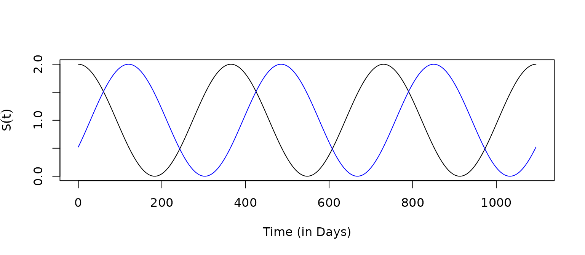
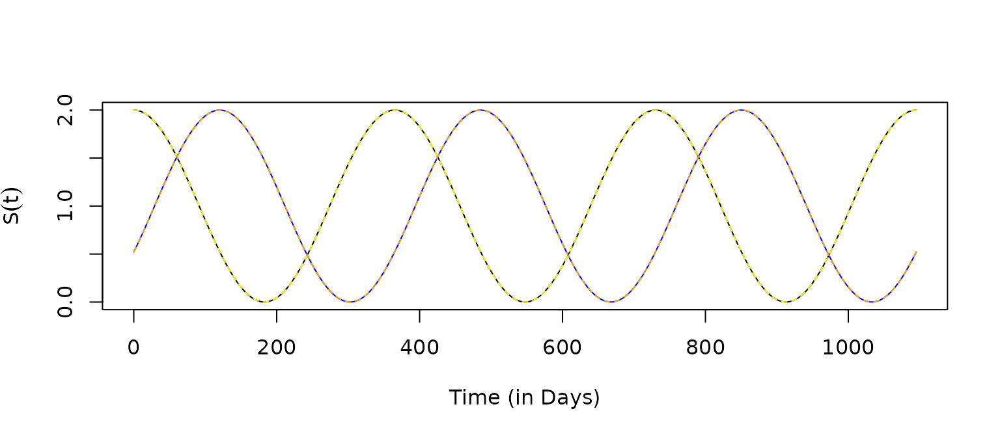
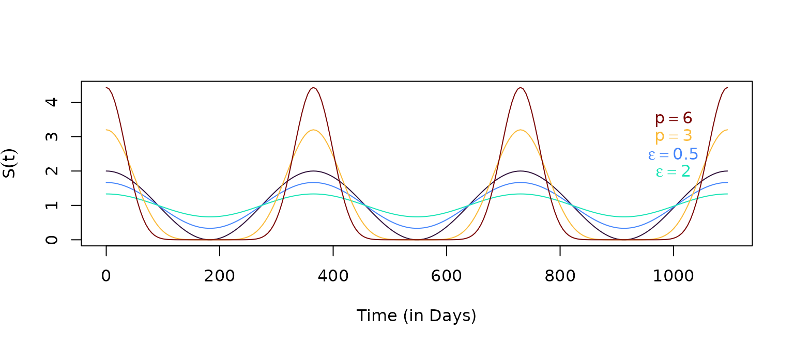

A constructor for seasonality functions drawn from a generalized
family involving trigonometric functions is returned by
make_function.sin with the associated
makepar_F_sin that returns functions of the form: \[F_S(t) = c\left(1 + \epsilon + \sin\left(\frac{2
\pi (t-\tau)}{365}\right)\right)^p\]
\(c\) or
normis a normalizing constant\(\tau\) or
phasesets the timing of the peak\(\epsilon \geq 0\) or
bottomis a shape parameter: increasing the values of \(\epsilon\) reduces the variance\(p \geq 0\) or
pwis a shape parameter.
p1 = makepar_F_sin()
S1 <- make_function(p1)The default normalizing constant is \(365\) so that if \(S\) is multiplied by some other constant, \(m,\) the average daily value of the function over a year is \(1.\)
integrate(S1, 0, 365)$val## [1] 365
tt <- seq(0, 3*365, by=5)
plot(tt, S1(tt), type ="l", xlab = "Time (in Days)", ylab = expression(S(t)))
p2 = makepar_F_sin(phase=120)
S2 <- make_function(p2)
plot(tt, S1(tt), type ="l", xlab = "Time (in Days)", ylab = expression(S(t)))
lines(tt, S2(tt), col = "blue")
The function can return a vector of \(N\) functions, each one configured as if \(N=1\)
p3 = makepar_F_sin(phase = c(0,120), N=2)
S3 <- make_function(p3)
s3 <- S3(tt)
plot(tt, s3[1,], type ="l", xlab = "Time (in Days)", ylab = expression(S(t)))
lines(tt, S1(tt), col = "yellow", lty=2)
lines(tt, s3[2,], col = "blue")
lines(tt, S2(tt), col = "orange", lty=2)
p4 <- makepar_F_sin(bottom=.5)
p5 <- makepar_F_sin(bottom=2)
p6 <- makepar_F_sin(pw=3)
p7 <- makepar_F_sin(pw=6)
S4 <- make_function(p4)
S5 <- make_function(p5)
S6 <- make_function(p6)
S7 <- make_function(p7)The shape parameters make it easy to configure a seasonality function with a range of features:
clrs = turbo(7)
plot(tt, S7(tt), type ="n", xlab = "Time (in Days)", ylab = expression(S(t)))
lines(tt, S1(tt), col = clrs[1])
lines(tt, S4(tt), col = clrs[2])
lines(tt, S5(tt), col = clrs[3])
lines(tt, S6(tt), col = clrs[5])
lines(tt, S7(tt), col = clrs[7])
text(1000, 3.5, expression(p==6), col=clrs[7])
text(1000, 3, expression(p==3), col=clrs[5])
text(1000, 2.5, expression(epsilon==0.5), col=clrs[2])
text(1000, 2, expression(epsilon==2), col=clrs[3])